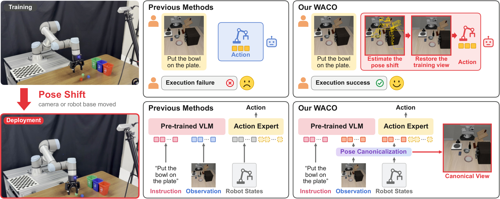
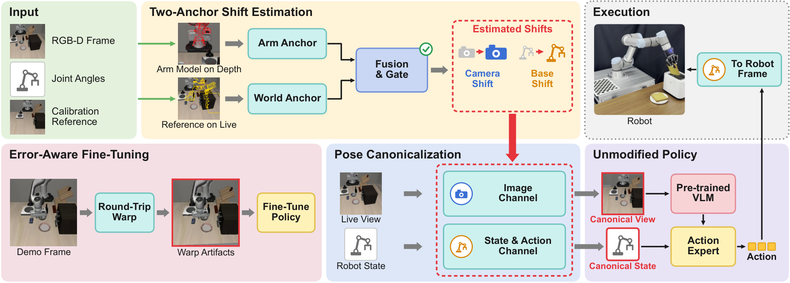
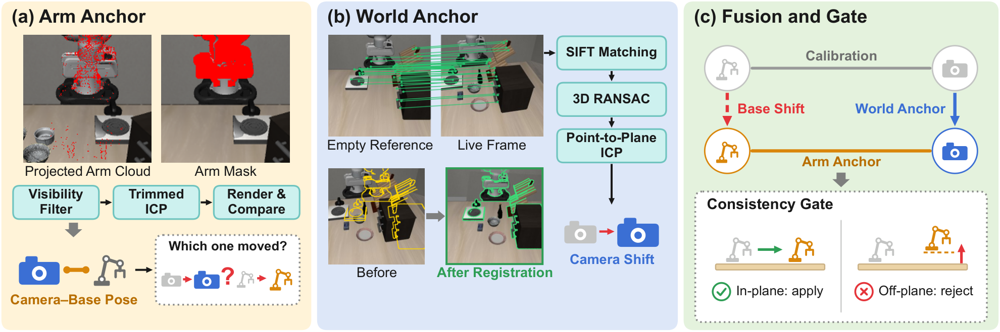
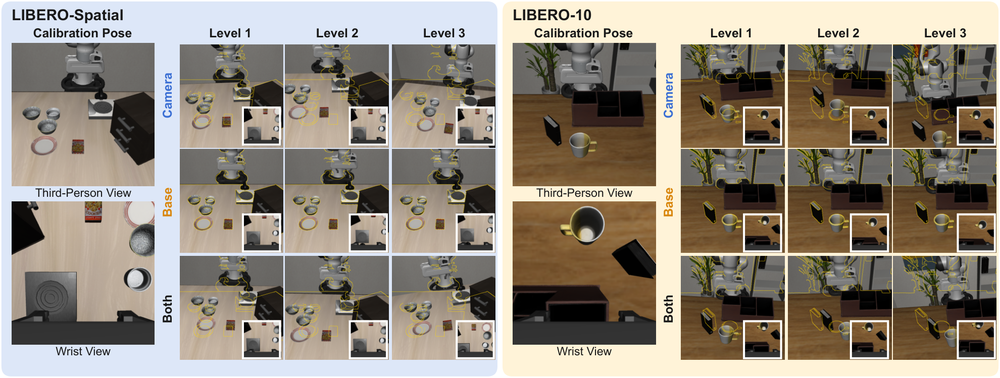
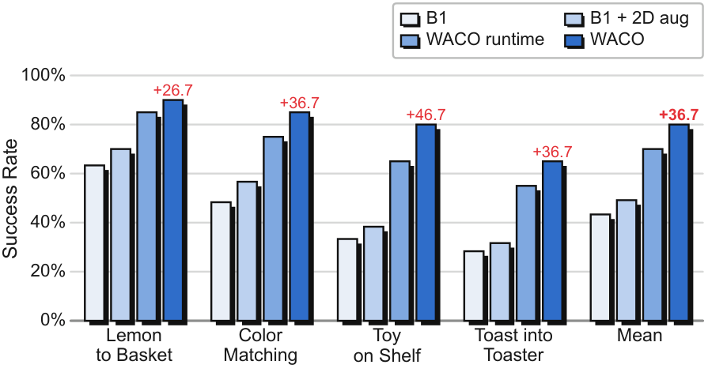
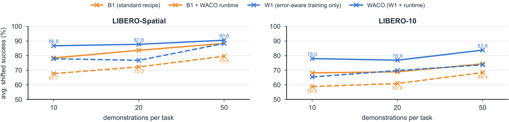
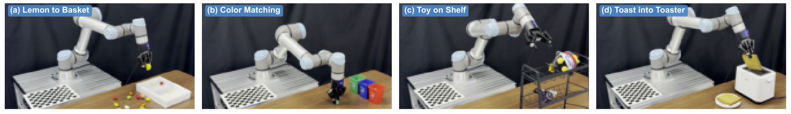

A bumped camera and a re-docked robot are one phenomenon.
Fine-tuning a vision-language-action (VLA) model on a few dozen demonstrations is the standard way to put a manipulation policy on a robot, yet the resulting policy silently assumes that the camera and the robot base stay exactly where they were during data collection: a bumped tripod or a base re-docked a few centimetres away makes it reach for the wrong place. We show that both failures are one phenomenon, a change of the camera-to-base extrinsic that the policy has memorised, and that the robot carries everything needed to undo it. We introduce WACO, a world-anchored canonicalization framework for VLA models: the arm, placed by forward kinematics at the measured joint angles, serves as a metric calibration target, and the static scene serves as the world anchor that tells a moved camera from a moved robot. From a single RGB-D frame, WACO estimates both shifts without ground-truth extrinsics or extra data, canonicalises the image to the calibration viewpoint and the state, action and start pose to the calibration base frame, and fine-tunes the unmodified policy under the artefacts of its own estimator. We also introduce LIBERO-PoseShift, the first benchmark for RGB VLAs with graded camera, base and compound shifts. Across LIBERO-PoseShift, the LIBERO-Plus camera track and four real-world tasks on a UR5e robot, WACO consistently outperforms the standard few-shot recipe and prior viewpoint-robust methods, raising shifted success by 13.2 points in simulation and by 36.7 points on the real robot, recovering 90% of the simulation gap to a ground-truth oracle and 87% of the real-robot gap, and establishing a new state of the art among methods that use no perturbed training data, with no test-time calibration.

Recover the shift, then map the observation back.
Instead of asking the policy to learn to generalise across poses from data, WACO recovers the shifts from what the robot already knows and maps the observation back to the pose it was trained at. The policy architecture is untouched, and a base shift is reduced to “the object is elsewhere on the table”, a variation the demonstrations already cover.

Two-anchor shift estimation
The arm anchor registers the FK-placed arm cloud to the observed depth and yields the extrinsic metrically, with no learned component. The world anchor matches the live frame to an empty-workspace reference and recovers the camera shift independently of the robot. Fusion gives the base shift in closed form; a base cannot leave the floor, so an out-of-plane residual above 2 cm or 2° means that an anchor has failed, and the episode then runs without canonicalisation.
Channel-separated canonicalization
Channel A forward-splats the third-person image to the calibration camera with the camera shift alone; disocclusions are never hallucinated and the wrist image is never warped. Channel B maps the reported end-effector pose into the nominal base frame, rotates the policy's deltas back before execution (exact, no first-order approximation), and homes the end effector to the start pose of the demonstrations.
Error-aware fine-tuning
A policy fine-tuned on pristine demonstrations has never seen a splatted image or a slightly-off state. With probability 0.5 each, a training frame is splatted to a random virtual camera and back with a shift perturbed by the estimator's error model, and the state receives a planar base-shift error. Action labels are unchanged, the flow-matching objective is unchanged, and no token, head or parameter is added.

LIBERO-PoseShift: graded camera, base and compound shifts.
LIBERO-PoseShift extends LIBERO, whose tasks come with 50 demonstrations collected from one camera pose and one base pose, with a deterministic perturbation layer on its robosuite/MuJoCo environment, so that all methods see identical scenes. State and actions follow a base-frame protocol in which a moved robot reports the pose it believes it has, exactly as hardware does.
Camera shift · L3
Third-person observation of the same episode at the calibration pose and under the selected shift, as sampled by the benchmark (policy: the standard few-shot recipe, no canonicalisation; rollouts in real time). The shift of every task, episode, kind and level is fixed by the benchmark's deterministic sampler.
| Level | Camera trans. | Camera rot. / axis | Base trans. | Base yaw | px (t / yaw) |
|---|---|---|---|---|---|
| L1 | ≤ 2 cm | ± 3° | ≤ 2 cm | ± 3° | 6 / 12 |
| L2 | ≤ 5 cm | ± 5° | ≤ 5 cm | ± 8° | 15 / 21 |
| L3 | ≤ 10 cm | ± 10° | ≤ 10 cm | ± 15° | 31 / 42 |
Perturbation levels. Camera translations are uniform in a ball and base translations in a disc, both between half and the full radius; rotations are uniform per axis. Last column: displacement of a target object in the 256² third-person view for the largest translation / yaw.

The standard recipe is fragile; WACO stays near the oracle.
Across LIBERO-PoseShift, the LIBERO-Plus camera track and four real-world tasks on a UR5e robot, WACO consistently outperforms the standard few-shot recipe, and its margin grows with the size of the shift.
Success under growing pose shifts
LIBERO-PoseShift (LIBERO-Spatial and LIBERO-10, 200 episodes per point, base-frame protocol). All learned policies share checkpoint, demonstrations and budget.
Success rate in %. Differences below two points lie within the Wilson 95% intervals and are not interpreted.
How much of the gap to the oracle is recovered
Average success over the shifted conditions: the standard recipe, WACO, and the ground-truth oracle that canonicalises with the true shifts.
Pose-shift robustness on LIBERO-PoseShift (LIBERO-Spatial and LIBERO-10, 200 episodes per cell, base-frame protocol). Base / camera gauge: the arm's pose change read as a camera / base shift. † Upper bound with ground-truth poses. Avg is the mean over the nine shifted conditions.
LIBERO-Plus camera track (1,599 tasks, one episode each). Released: the benchmark's prompts, which append the variant's parameters; corrected: the task's own instruction. Evaluation seed 0 / mean over three evaluation seeds. The WACO runtime alone lifts the public checkpoint to 89.4% without retraining or extrinsics.
Real-robot results (UR5e, success rate in %, 20 trials per task and condition, averaged over the four tasks). Avg is the mean over the three shifted conditions; † uses the re-calibrated ground-truth shifts and is an upper bound.

Few-shot scaling: average shifted success (nine conditions) on LIBERO-Spatial and LIBERO-10 with the first 10, 20 or all 50 demonstrations per task, same recipe and budget. WACO with 10 demonstrations (82.4%) exceeds the standard recipe with 50 (74.0%).

Ablations. Each block changes one component of the full method on LIBERO-Spatial and LIBERO-10. Avg is the mean over the nine shifted conditions.
In simulation and on a real UR5e.
All clips are played at 3× speed.
Simulation · LIBERO-PoseShift, level 3
3× speedThe same episode and the same shift: the standard few-shot recipe on the shifted view, and WACO on the view it canonicalises for the policy.
Real robot · UR5e, four tasks
3× speedWACO on all four tasks: one uncut trial at the calibration pose and one under the base shift, in which the table and the tripod have been moved together 8 cm to the left and 6 cm forward, away from the arm.

What we found.
The standard recipe is fragile.
The official few-shot recipe loses 17.0 points at camera L3, 21.5 at base L3 and 40.0 at compound L3, and a 2D augmentation recovers part of the camera axis only. Base shifts, which no prior benchmark measures, are the harder half of the problem even for the best policy.
Data alone is not enough.
A policy trained on exactly WACO's augmented samples but run without canonicalisation gains 7.1 points over the standard recipe, yet stays 6.1 behind WACO, because the policy cannot undo a shift it never observes explicitly.
Estimation plus error-aware training closes the loop.
The runtime alone already recovers 82% of the gap to the standard recipe's own oracle, and with error-aware training WACO reaches 87.2%, 13.2 points above the standard recipe and within 1.5 points of its own oracle, with a clean score not below the standard recipe's.
Both anchors are needed.
The single-anchor gauges fail as the gauge ambiguity predicts: the base gauge under base shifts (base L3: 56.0 vs. 86.5 for WACO), and both gauges at camera L3 (64.0). Only the two-anchor estimate handles the compound condition (both L3: 79.0 vs. 46.0 and 49.0).
The advantage grows where demonstrations are scarcest.
The gain over the standard recipe grows from 13.2 points with 50 demonstrations per task to 15.7 with 20 and 19.2 with 10, so that WACO with 10 demonstrations (82.4%) exceeds the standard recipe with 50 (74.0%).
From simulation to a real robot.
On the UR5e, WACO raises the average shifted success from 43% to 80%, improves every task under every condition, and comes within 5.4 points of the ground-truth oracle. The front end runs once per trial in about 0.8 s on the robot's CPU and recovers the real shifts with median errors of 2.8 mm and 0.3° for the camera and 3.8 mm and 0.4° for the base.
BibTeX
@article{li2026waco,
title = {Towards Pose-Robust Few-Shot Vision-Language-Action Models},
author = {Li, Wenhao and Han, Zhongyi and Wei, Yuhao and Han, Liang and Yin, Yilong and Nie, Liqiang},
journal = {arXiv preprint},
year = {2026}
}